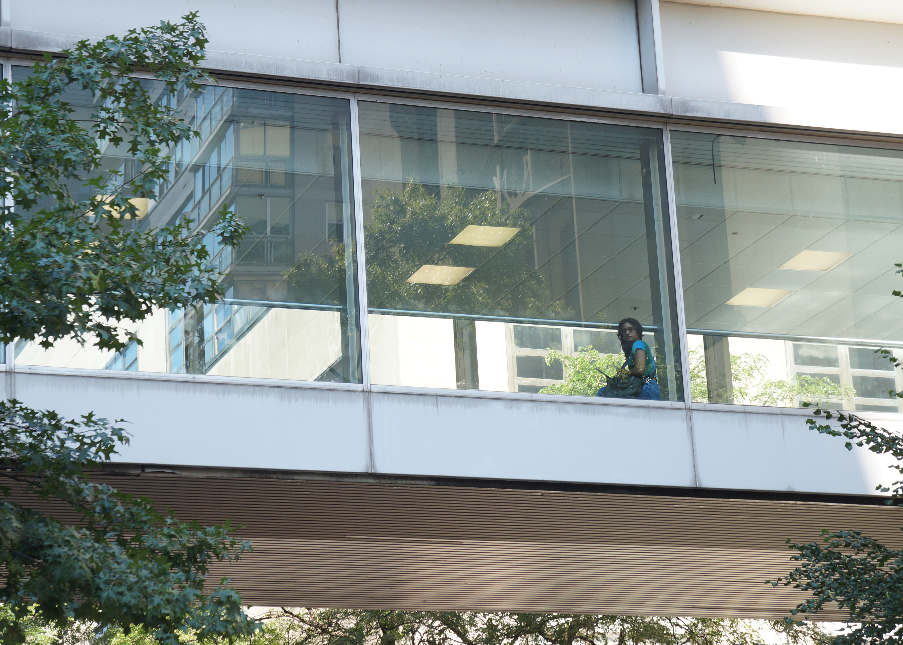
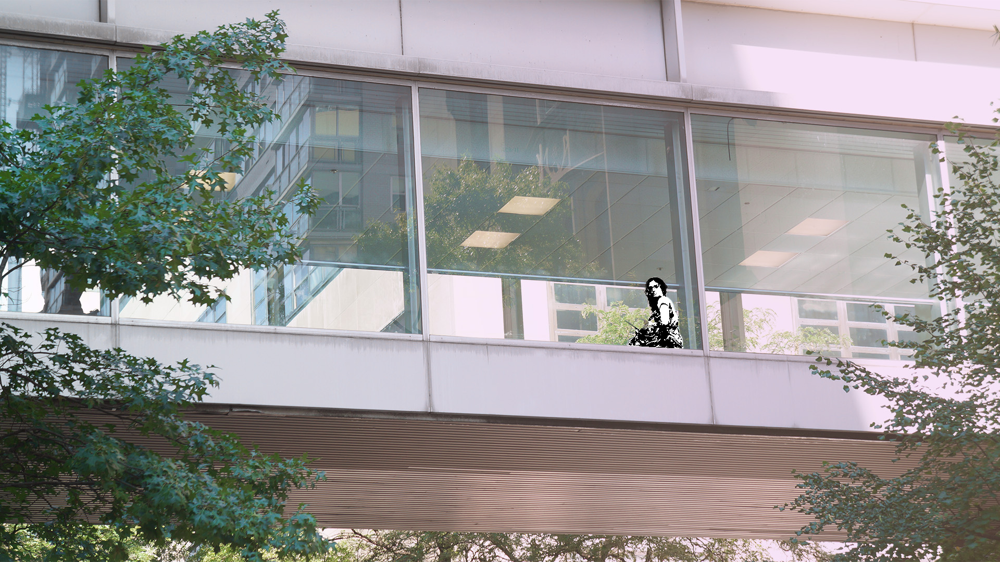

This photo was chosen because...it was most unique out of all photos taken, almost miraculous to have the
subject look at me while I was taking the photo & with no surrounding persons.
I used different tonal elements such as...lots of adjustment layers w: gradient, brightness contrast
curves, exposure, vibrance, color balance, hue/saturation, modify feather & density, a threshold layer on the subject,
used the lasso to isolate the subject and add a layer of threshold